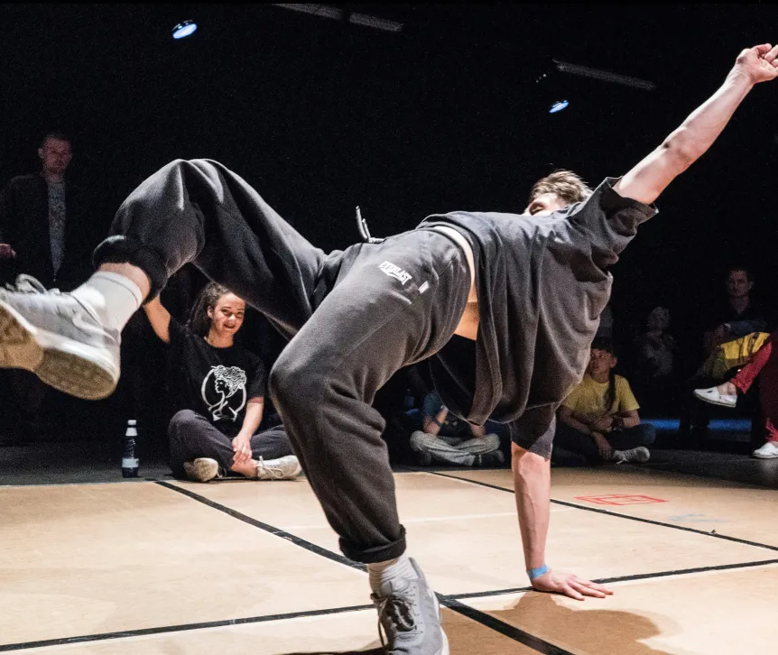

<section class="founder-dance">
    <div class="container">
        <div class="founder-dance__left">
            <div class="founder-dance__title tl2">От бальных до брейк-данса</div>
            <div class="founder-dance__text txt18">
                Начал свой спортивный путь с танцевальной карьеры. С 5 лет Павел занимался хореографией. Могло ли быть иначе, когда мама хореограф? <br><br>
                В 6 лет начинаются бальные танцы. С партнёршей Павел достиг высоких результатов на чемпионатах Европы. Но в бальных танцах всегда есть чёткие рамки: парный танец, заученные программы, мало импровизации. Павлу хотелось большей независимости, поэтому в 12 лет он начал заниматься брейк-дансом.<br><br>
                В бальных танцах не хватало свободы движения. Павел нашёл это в современном стиле. В брейк-дансе Павел впервые попробовал себя в тренерском амплуа: сначала в роли помощника, а с 16 лет уже самостоятельно вёл группы.
            </div>
        </div>
        <div class="founder-dance__right">
            <div class="founder-dance__list">
                <div class="founder-dance__item txt20">
                    
                    <span class="founder-dance__item-number">01</span>
                    <span>занял 2 место на Чемпионате мира <br class="desktop"> в Италии (2011)</span>
                </div>
                <div class="founder-dance__item txt20">
                    
                    <span class="founder-dance__item-number">02</span>
                    <span>попал в топ-16 b-boys Молдовы во время отборов на соревнования Red Bull BC ONE</span>
                </div>
                <div class="founder-dance__item txt20">
                    
                    <span class="founder-dance__item-number">03</span>
                    <span>стал кандидатом в мастера спорта <br class="desktop"> по брейк-дансу в Молдове</span>
                </div>
            </div>
            <div class="founder-dance__img">
                
            </div>
        </div>
    </div>
</section>